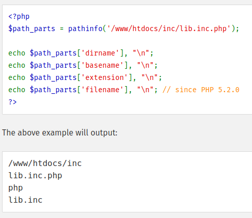

Function that takes the file name and a PATHINFO constant (e.g. PATHINFO_EXTENSION) and returns the selected data type.
One can also specify no constant. This will return an array with all "options" as indexes.
